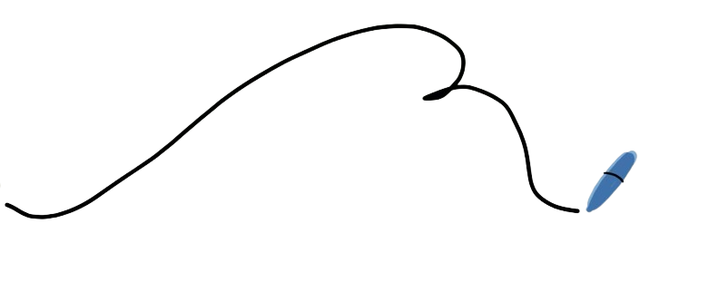
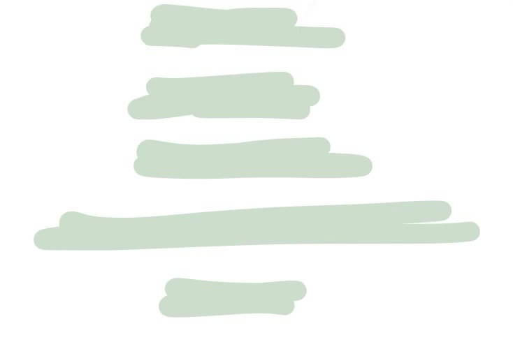
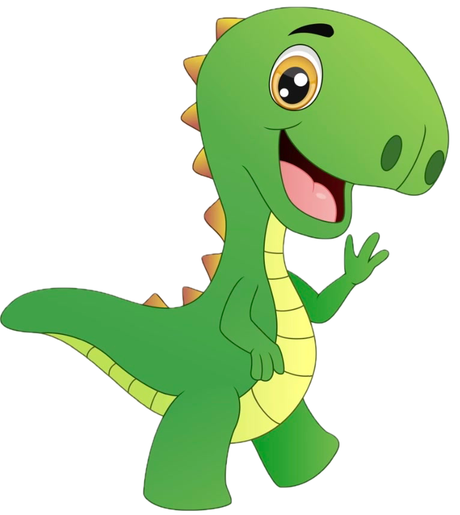
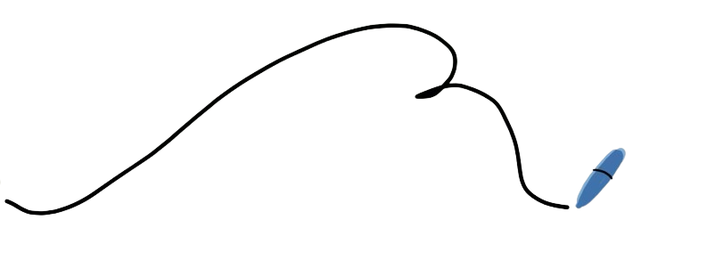
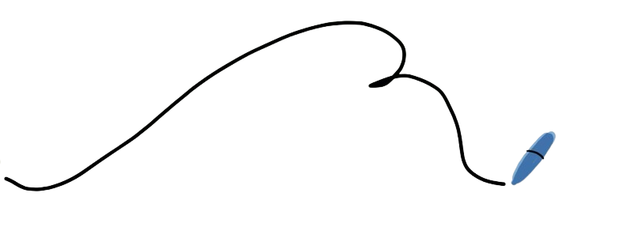

Videos
Tutors
Readings
Practice Problems
Games

 © 2024 Scholarly. All rights reserved.
© 2024 Scholarly. All rights reserved.
 
© 2024 Scholarly. All rights reserved.

© 2024 Scholarly. All rights reserved.